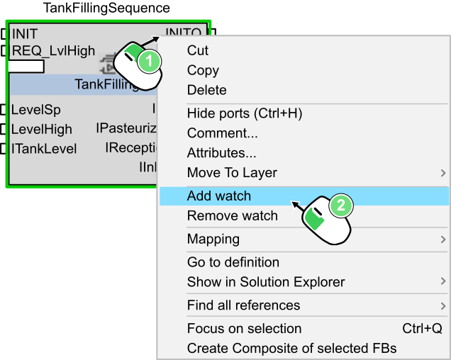
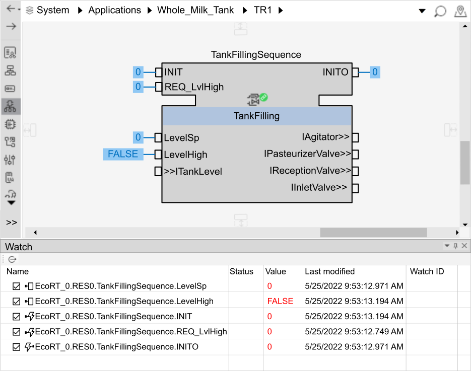
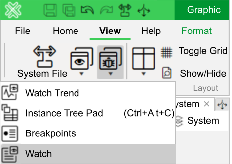
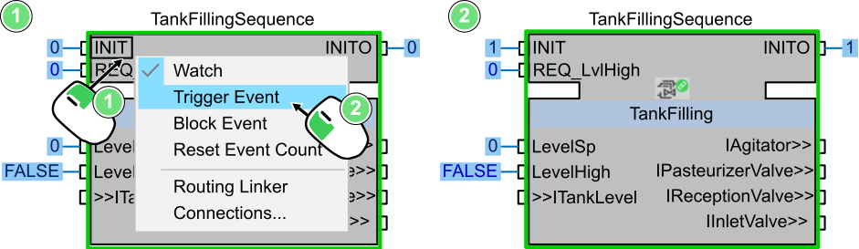
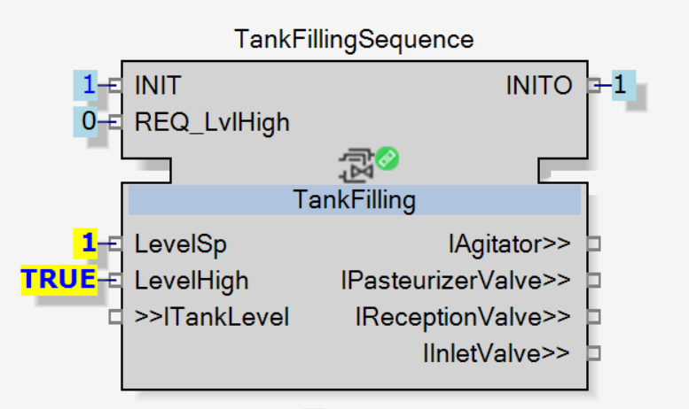

Watch, Trigger Event and Force Value
Now that the application, and then the TankFillingSequence CAT, is online and running, everything is ready to start manipulating the CAT.
To do so, there are three main actions available:
-
Watch: It shows the current online value of a variable or an event.
-
Trigger Event: It manually triggers an event. This action is done to push function block program to be executed or variable to be updated.
-
Force Value: It forces the value of a variable. When a variable is forced, then it overrides the current value of the variable and gives the forced value to the variable instead. The variable keeps the forced value as long as the variable is forced.

|
NOTE:
To know more about these three actions, check the topic Test and Troubleshooting in the User Manual. To find it, follow . |
To carry out these actions, go to the TR1 layer of the Whole_Milk_Tank application.
Watch
To watch the TankFillingSequence CAT, click Add watch.
|
 |
|
|
NOTE:
If the right click is done over the function block, then all its ports will be watched. In contrast, if the right click is done over a port then only this specific one will be watched. |

|
Here, as the function block has been selected then all its ports are now watched. As the application just got deployed and run, then all the ports of TankFillingSequence are at their default value, which is either 0 or FALSE. |
Once a function block or a port is watched, it will remain on watch until it get removes. To keep the track of all the ports and function blocks watched, show the Watch pad.

If you don’t have access to the Watch pad, it can be opened with the View menu as shown in the image below.
|
 |
Trigger Event
Now that the function block is being watched, the changes made by triggering event will be visible.
For instance, let’s trigger the input event INIT.
The input event has to be triggered to initiate the SMOOTH function blocks inside the CAT.
As a chain of initialization was created, then the initialization of all the function blocks will be triggered. And since the output event has been connected to the last function block, then if the initialization fully happened then INITO will automatically be updated.

|
|
As the output event INITO is updated to 1, it makes sure that the SMOOTH function blocks that are part of the INIT chain have been correctly initialized. |
Force Value
To force the value of a variable, proceed as follows:
-
Right-click on a variable and select Force Value.
-
From the dialog box appearing, either type the number needed (for INT, REAL and so on) or click on the value (for boolean) to switch it to the other one.
-
Validate the forced value.
|
 |
|
|
The variable gets its value forced. A forced value is represented differently than a watched one to highlight it. |
|
|
NOTE:
Once a value is forced, then the Watch option is stopped since the forced value overrides the input value. To stop a forcing value, either deselect Force Value or select back Watch to give back the priority to the input value. |